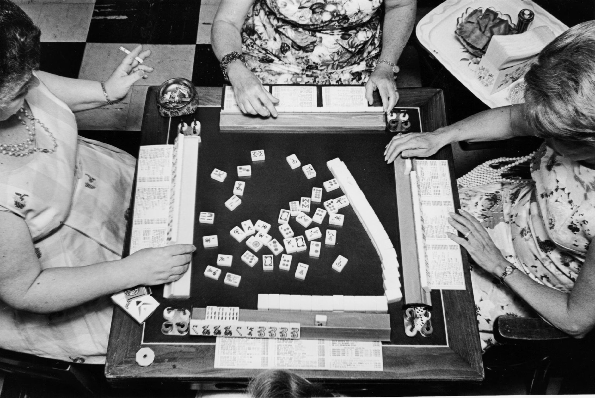

Roughly speaking, mahjong started in late Qing, around the 19th century, with different scholars debating its actual year of invention. Late Qing scholar, lecturer of the Shanghai Jiaotong University, Zhixian Xu wrote in the book "Folklore of the Ten Leaves"that the popularity of mahjong grew in the last years of Guangxu (after the end of the First Sino-Japanese War in 1895). One can conclude that the decades between the late 19th century to the early 20th century were the infant years of mahjong. Games scholar David Parlett has written that the Western card games Conquian and Rummy share a common origin with Mahjong. All these games involve players drawing and discarding tiles or cards to make melds. Khanhoo is an early example of such a game. The most likely ancestor to Mahjong was pènghú which was played with 120 or 150 cards. It is not known when the conversion from cards to tiles took place precisely but it most likely occurred in the middle of the 19th century. The earliest surviving tile sets date to around 1870 and were acquired in Fuzhou, Shanghai, and Ningbo. The ban on gambling after the founding of the People's Republic in 1949 led to a decline in playing. The game itself was banned during the Cultural Revolution (1966-1976). Today, it is a favorite pastime in China and other Chinese-speaking communities.
